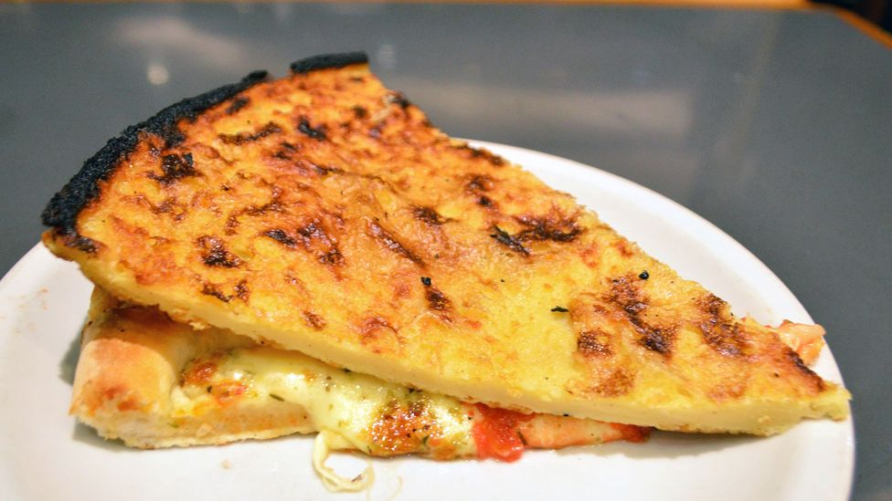

Pizza a Caballo -- Pizza Sandwich

Pizza a Caballo is a "pizza sandwich" made with
two very different kinds of dough.
A slice of thick-crusted cheese pizza is topped with a thin slice of fainá,
a chickpea flatbread, and then enjoyed.
It is a unique and delicious appetizer.
Ingredients
- 2 1/2 cups garbanzo bean flour
- 1 teaspoon kosher salt
- 1/4 cup plus 3 tablespoons olive oil, divided
- 2 tablespoons Parmesan cheese
- 1/2 teaspoon freshly ground black pepper, or to taste
- 2 to 2 1/2 cups water
Steps
-
Gather the ingredients.
-
In a medium bowl,
whisk the garbanzo bean flour with the salt,
3 tablespoons of the olive oil,
the Parmesan cheese (if using) and a generous amount of ground black pepper.
-
Whisk in 1 3/4 cups of water until the mixture is well blended.
Set the batter aside for about 30 minutes at room temperature to let the garbanzo
flour absorb some of the water.
-
Preheat the oven to 450 F.
When it is hot, place the remaining 1/4 cup olive oil in a 12-inch pizza pan.
Heat the pan in the oven until very hot.
-
Gradually stir remaining water into the batter mixture until it is thin enough to pour.
Remove the hot pizza pan from oven, and immediately pour the batter into the pan.
The batter should make a thin layer, about 1/4 inch.
Place the pan back in the oven and bake until fainá is golden and crispy about 8 to 10 minutes.
-
Remove the pan from the oven.
-
Cut the flatbread into pieces and serve hot.